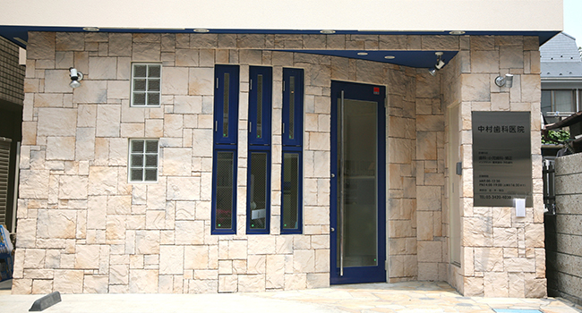
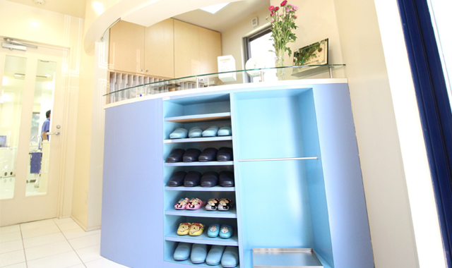
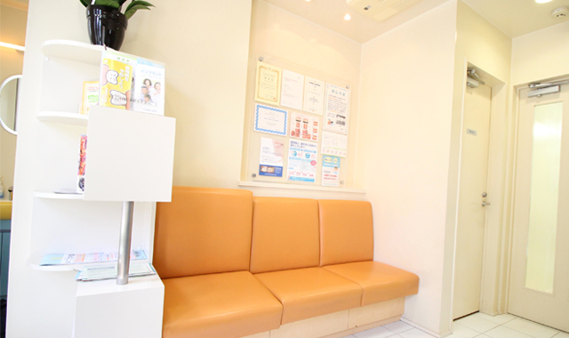
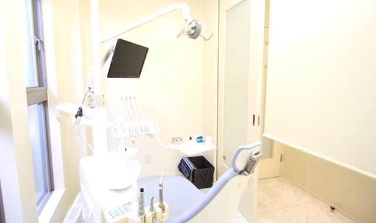
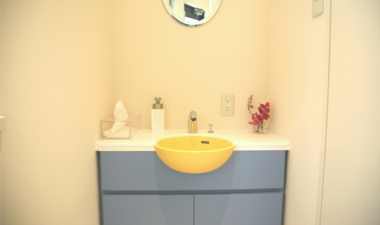
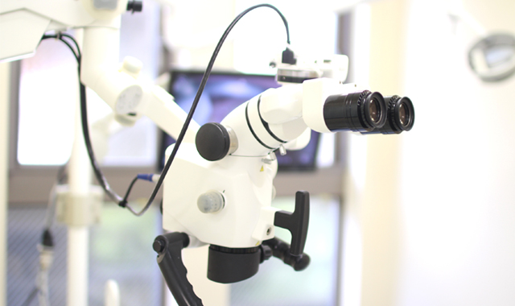
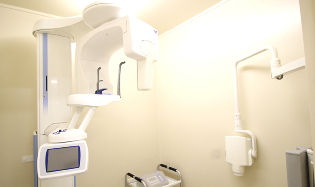
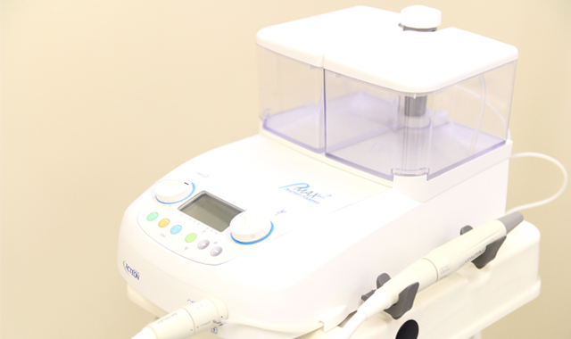
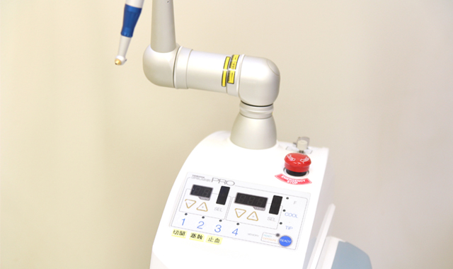
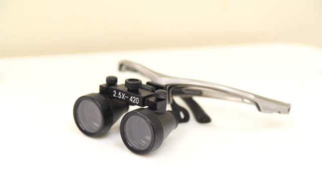

医院紹介

千歳船橋の歯医者「中村歯科医院」の概要や設備をご案内します。当院は千歳船橋駅から徒歩3分、土曜日も診療するなど、どなたにも通いやすい歯科医院です。地域に貢献すべく、一般歯科だけでなく予防歯科や審美歯科に対応するなど、根ざした歯科医療を行っています。
医院概要
| 医院名 | 中村歯科医院 |
|---|---|
| 住所 | 〒156-0052 東京都世田谷区経堂4-5-3 |
| 電話番号 | 03-3420-4030 |
| 診療時間 | 平日 9:00～12:30 / 14:00～19:00 土曜 9:00～12:30 / 14:00～16:30 |
| 休診日 | 木曜・日曜・祝日 |
| 最寄駅 | 小田急線「千歳船橋駅」から徒歩3分 小田急線「経堂駅」から徒歩12分 |
| 診療内容 | 歯科（むし歯治療・歯周病治療）、小児歯科、矯正歯科、インプラント治療、審美歯科、予防歯科 |
| アクセス |
院内紹介
受付

当院の受付は日当たりがよく、明るいオープンなスペースです。初診の際は保険証を忘れずにご来院ください。受付スタッフが丁寧に対応いたします。
待ち合いスペース

受付がお済みになった方は、待ち合いスペースにてお待ちください。お名前をお呼びするまでの間、ソファでおくつろぎいただけます。また、院内感染を予防するため消毒と滅菌を徹底しています。
診療室

診察室には他の患者様の目を気にせずに済むよう、パーティションを設けています。治療前のカウンセリングなども、プライバシーに配慮しながら行わせていただきますので、ご安心ください。
パウダールーム

お化粧直しや身だしなみを整える際にご利用いただけるパウダールームも用意しています。診療前のブラッシングなど、ご自由にお使いください。
マイクロスコープ

当院では、肉眼の3～24倍の拡大視野を得られる医療用のマイクロスコープを導入しています。肉眼では捉えられない細かな治療箇所もしっかりと治療できるため、根管治療やインプラント治療において精度の高い治療を実現します。
デジタルレントゲン

従来のレントゲンと比較し、放射線の照射量を大幅に軽減できるデジタルレントゲンです。多彩な機能を備えており、精密な診断に役立ちます。
超音波スケーラー

なかなか落としにくい歯垢（プラーク）や歯石を超音波と水または洗浄液で除去します。
レーザー治療器

患部の治療がピンポイントでできるレーザー治療器は、止血効果や除菌効果に加え、腫れや痛みも抑えられ、術後の回復も早くなります。
歯科用ルーペ

肉眼では見られなかった歯の微細な凹凸、隠れた根管、補綴物と歯肉の間の隙間などが確認でき、削る量も最低限に抑えることができます。
拡大鏡の使用により、診断の正確さが高まり、より安全な治療方法やアプローチが可能になります。